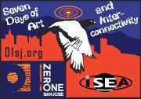

Thank you for your interest in ZeroOne San Jose and the ISEA2006 Symposium.
For Press Relations please contact:
San Francisco Bay Area Local/Regional Media
Brechin Flournoy Public Relations Director NEQA/PR 415-621-3186 x104
National/International Media
Marjory Hawkins Hawkins Public Relations 925-672-2234
Last Updated ( Jun 23, 2006 at 11:45 AM )
ZeroOne San Jose – The Elevator Pitch
Written by Michela Pilo
Jun 12, 2006 at 11:13 AM
For seven consecutive days this summer, nearly 200 juried artists from around the world will be converging on the Silicon Valley to showcase some of the most innovative, astounding art ever seen or experienced. It’s ZeroOne San Jose: A Global Festival of Art on the Edge and ISEA2006 Symposium. From August 7-13, ZeroOne San Jose will transform the entire city into the North American epicenter for the intersection of art and digital culture. It is a multi-dimensional, startling and brilliant event featuring exhibits, live cinema, performances, workshops, and youth activities. All are one-of-a-kind, many never-before, only-here experiences. See 01sj.org
Last Updated ( Jun 12, 2006 at 02:14 PM )
Press Conference, June 14, 2006
Written by Steve Dietz
Jun 15, 2006 at 10:46 PM
At the San Jose Museum of Art
In order of appearance:
Dan Keegan, Executive Director, San Jose Museum of Art Ron Gonzalez, Mayor, City of San Jose Paul Krutko, Director, Office of Economic and Cultural Development, City of San Jose John Kreidler, Executive Director, Cultural Initiatives Silicon Valley Joel Slayton, Chair, ZeroOne San Jose Carmen Sigler, Provost, San Jose State University Gordon Knox, Director, Don and Sally Lucas Artist Programs, Montalvo Art Center Dr. Peter Friess, President, Tech Museum of Innovation Dan Fenton, CEO, San Jose Convention and Visitors Bureau Steve Dietz, Director, ZeroOne San Jose
On June 5, 2006, Forest Williams, San Jose City Council member, Kim Walesh, Assistant Director of the City of San Jose OFfice of Economic and Cultural Development, Steve Dietz, Director, ZeroOne San Jose / ISEA2006 Symposium, Joel Slayton, Chair, ZeroOne San Jose / ISEA2006, and Cynthia Taylor, Director of Education, ZeroOne San Jose presented this briefing about the Festival and Symposium. Click here to view.
"This is an enthusiastic occasion. This is a time to dream the impossible and bring it to reality. That's what we're about. Dreams. The future." Forest Williams